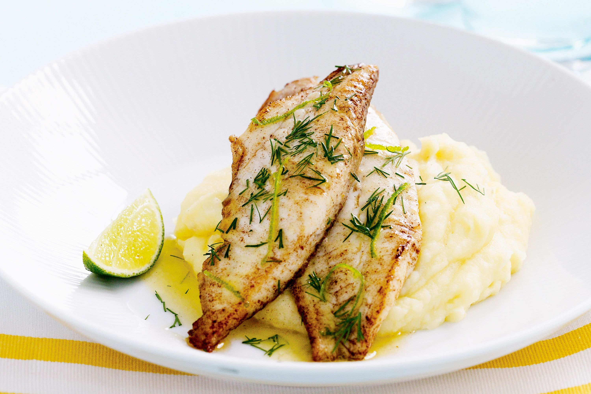

Fish And Mash

In Need Of A Quick And Tasty Dinner?
This fish and mash is just what you need when you want a healthy, hearty dinner. You will definitely make this recipe more than once, especially on those colder days, when you are in need of a hearty meal. Fee free to customise and to add vegetables to the mix for a pop of colour and flavour.
Ingredients
- 1 teaspoon coriander powder
- 1 lime
- 2 tablespoons olive oil
- 1 tilapia fish
- 3 large potatoes
Steps
- Preheat oven to 180C and dethaw the fish and set aside.
- Peel potatoes and cut into small cubes and boil, this will speed up the cooking process.
- Season fish and put in a baking glass/tray and put into oven for 30 minutes.
- Drain potatoes of water only leaving a little and mash, adding salt, mayonnaise, milk and cheese.
- Plate your fish and mash and enjoy!